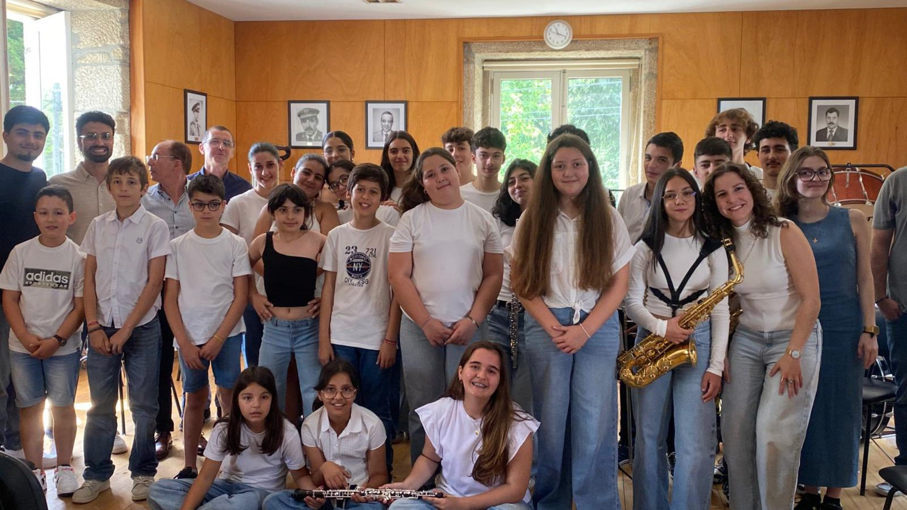

Flauta
- Lara Marques
- Paula Lima
- Sofia Pinheiro
Nasceu em Vila Cova da Lixa no ano de 1977, começou a tocar clarinete aos sete anos de idade na Banda de Música da Lixa, tendo mais tarde estudado no Conservatório de Música de Paredes, no Conservatório de Música do Porto e na Escola de Música do Conservatório Nacional em Lisboa, nas classes dos professores António Costa Santos, Moreira Jorge e Luís Gomes, respetivamente. Em 1996 ingressou na Banda Sinfónica da Guarda Nacional Republicana, transferindo-se para a Banda Marcial da GNR do Porto no ano de 2002. Atualmente, aufere o posto de Sargento-Chefe do quadro Honorífico/Músico da referida instituição e desempenha funções administrativas, execução, chefia e direção.
Participou em Masterclass, com professores como: Joaquim Ribeiro, Luís Gomes, Nuno Silva, Carlos Alves e Rui Martins tendo trabalhado especialmente com Herman Stefansson - Solista da Filarmónica Real de Estocolmo, Guy Deplus – Solista da Ópera de Paris, entre outros. Integrou a Orquestra Lusíada (Lisboa) e tem sido convidado para efetuar concertos em diversas orquestras com destaque especial para a orquestra de gala da queima das fitas de Coimbra (2003), Orquestra “Sine Nomine”, Orquestra do Norte e OIDO (Orquestra Internacional de Diretores de Orquestra) tendo com isso oportunidade de trabalhar com maestros e solistas de renome internacional. Efetuou vários recitais pelo País e integra alguns grupos de câmara com destaque para o Quarteto de Clarinetes da “Banda Marcial da GNR do Porto” da Guarda Nacional Republicana e o Quarteto de Clarinetes do Conservatório do Vale do Sousa. Tem sido várias vezes convidado para integrar júris em concursos, festivais e orientar Masterclass.
Com uma especial dedicação pela direção, orienta diversos grupos instrumentais e corais, tendo participado em vários cursos de direção de orquestra, de banda e de coro com reconhecidos maestros, tais como: Cesário Costa, Jacinto Montezo, Barbara Frank, Jorge Matta, Eugénio Amorim, Pedro Monteiro, Paulo Vassalo Lourenço, André Granjo, Ignacio Petit, Van der Roost, Jose Rafael Vilaplana, Ernst Schelle, Mark Heron, Francisco Navarro Lara, Rafael Agulló Albors, Frank De Vuyst, Alex Schilling, entre outros. Foi Maestro do Grupo Coral Cultural e Recreativo Polifidelis–Penafiel entre 1996 a 2006 e Diretor Artístico da Banda Musical de Freamunde entre 2007 a 2021. É frequentemente convidado para dirigir diversos grupos corais e instrumentais nomeadamente orientação de estágios de orquestra e ações de formação. Concluiu a frequência do Nível Superior em Direção na Escuela de Dirección de Orquesta y Banda “Maestro Navarro Lara”. Foi co-autor de várias edições Best Seller com especial destaque para VADEMÉCUM del Director de Orquestra del Siglo XXI de Francisco Navarro Lara. No ano letivo 2023-24 frequentou o Nivel III da Academia Europeia de Direção de Banda (AEDB).
Em 2008, concluiu Licenciatura em Pedagogia do Instrumento (clarinete) na Escola das Artes da Universidade Católica Portuguesa, com elevada classificação, onde estudou com os professores Carlos Alves e António Rosa. Em 2010, concluiu Mestrado em Ensino da Música na Escola das Artes da Universidade Católica Portuguesa sob a orientação do Prof. Doutor José Abreu. Em 2019, concluiu o Mestrado em Música/Ramo Direção, no Departamento de Comunicação e Arte da Universidade de Aveiro sob a orientação do Prof. Doutor Evgueni Zoudilkine com elevada classificação.
Lecionou em várias escolas de música, nomeadamente no Conservatório de Música de Felgueiras e no Conservatório de Música de Basto. Foi professor/maestro da Orquestra de Sopros do Conservatório de Vale do Sousa (CVS) entre os anos letivos 2009/10 ao 2016/17, tendo obtido o 1º Prémio/2º Lugar na Categoria Académica no III CIB Filarmonia D’Ouro. Coadjuvou a coordenação de seis edições do Estágio de Orquestra de Sopros, organizado pelo Departamento de Sopros do CVS. Atualmente, leciona a disciplina de Clarinete no Conservatório de Vale de Sousa e é Diretor Artístico da Banda Cabeceirense.


"A minha visão para a Banda Cabeceirense fundamenta-se na salvaguarda do seu património histórico, artístico e humano, reconhecendo o seu papel enquanto referência cultural do concelho de Cabeceiras de Basto. Entendo esta instituição como depositária de uma tradição filarmónica que importa preservar, dignificar e projetar no tempo.
A minha ação e contributo, como Diretor Artístico, vai no sentido para que a banda continue pautada pela excelência artística, pelo rigor interpretativo e pelo sentido de missão cultural, capaz de conjugar a herança do passado com uma visão de futuro sustentada, aberta à inovação e ao crescimento contínuo. O meu compromisso traduz-se na construção de um projeto artístico sólido, coeso e inclusivo, ao serviço da música, da comunidade e do prestígio da instituição."

Texto dummy: A Escola de Música da Banda Cabeceirense é um espaço de formação, disciplina e crescimento, onde cada aluno encontra acompanhamento e um percurso sólido — da iniciação até à integração progressiva na Banda.
Texto dummy: Valorizamos a cultura, a responsabilidade e o espírito de equipa, criando bases técnicas e humanas para que a música faça parte da vida dos nossos alunos e da comunidade.
Para iniciar a inscrição, envia-nos uma mensagem com: Nome, Data de nascimento e Contacto telefónico.
Nome: ____
Data de nascimento: ____
Telefone: ____
Observações (opcional): ____
Confirmação de vaga, horários, instrumentos disponíveis e próximos passos.